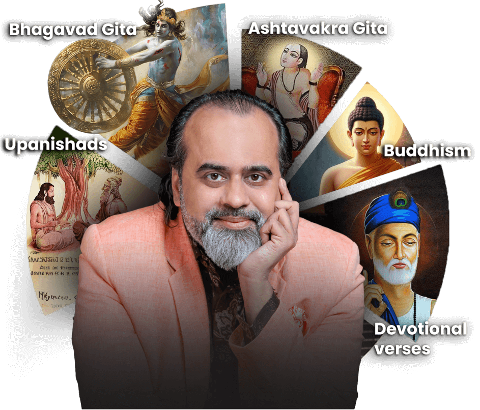

Acharya Prashant (born Prashant Tripathi; 7 March 1978) is an Indian spiritual teacher,[12] philosopher, author,[13][14] poet, and publ ic speaker who brings the essence of Advaita Vedanta into everyday life, expressing it in a language that resonates with the modern mind.[15] He founded the PrashantAdvait Foundation in 2015, which serves as the main platform for his work.[16] Acharya Prashant is also actively engaged in addressing and raising awareness about pressing global issues like climate crisis[17], animal cruelty[18], women’s empowerment[19] and superstition[20]. He sees social reform as a natural extension of inner clarity and wisdom. He has been honoured by the IIT Delhi Alumni Association for Outstanding Contribution to National Development[21], by PETA as the Most Influential Vegan[22], and by the Green Society of India as the Most Impactful Environmentalist[23].

prashant's curriculum includes comprehensive commentaries on the Bhagavad Gita—which he refers \to as the "17 forms of the Gita"—and on the Upanishads—the "60 forms of the Upanishads"—through which he explores Vedantic concepts in depth. He further enriches his seminars by integrating devotional and poetic texts, notably the songs of the 15th‑century mystic Kabir and select Upanishadic verses, using these sources to exemplify non‑dual insights in a relatable, experiential format.
His pedagogical style is marked by a frank, direct approach that deliberately challenges conventional spiritual clichés and dogmas. Rather than offering abstract or esoteric theorizing, Prashant emphasizes the practical application of Vedanta to contemporary concerns such as interpersonal relationships, leadership development, social reform, and personal ethics. Through this blend of traditional scripture and modern relevance, he seeks to cultivate a lived understanding of non‑duality in his students’ daily lives. Prashant applies this non‑dual perspective in two complementary ways:
Scriptural commentaries He has delivered extensive lectures and produced written works on the Upanishads and the Bhagavad Gita, elucidating their teachings in a contemporary context. His courses—often referred to by titles such as "17 Forms of the Gita" and "60 Forms of the Upanishads"—break down classical verses into practical insights for self‑inquiry and inner transformation. Practical Q&A and problem-solving Through tens of thousands of open online sessions, Prashant addresses everyday dilemmas—relationships, career decisions, emotional challenges—demonstrating how Vedantic principles can be applied to resolve real‑world issues. By weaving scriptural wisdom into candid dialogues, he encourages seekers to confront ignorance about their own minds and to cultivate sustained clarity of consciousness. Through this dual approach, Acharya Prashant aims to make Vedanta accessible to a global audience, proposing that sincere self‑knowledge is the key to resolving both personal suffering and broader social and environmental crises
